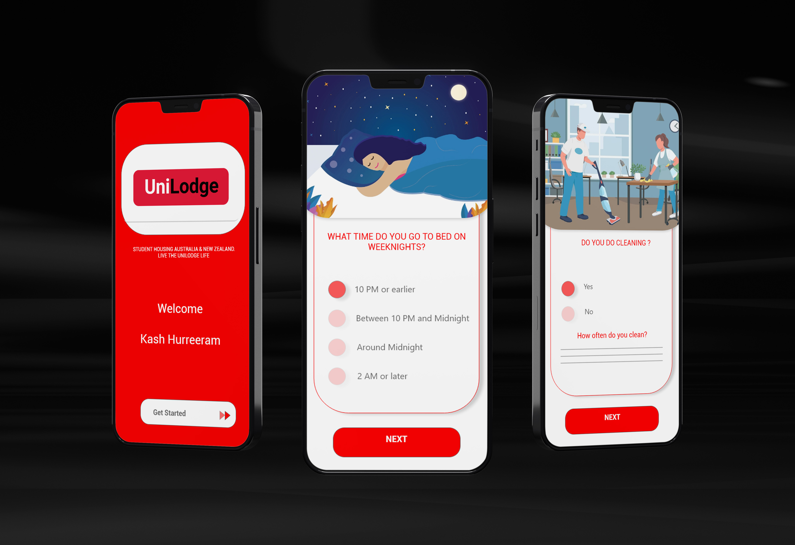

Category:
UI | UX Design
Unilodge Roomate Mobile App
UI | UX Roomates Mobile App
Unilodge Roomate Mobile appCategory: UI|UX Design
Client: International and local students
Project date: 2020
Unilodge offers affordable student apartments across Australia and New Zealand, both for international and local students.
Aim - to build and test a prototype for a “Roommates” feature in the Unilodge mobile app.
Unilodge staff have identified the need for a new feature “Roommates” on their existing app, allowing students to find compatible roommates to share their apartment with.
While designing the Mobile app, I have used the same colour palette of the Unilodge app because red signifies the essential power that propels life's passion, courage, and love in this context.
White, on the other hand, is bright and may be used to emphasise highlights or create a sense of space. White is often associated with freshness, brilliance, sensitivity, and elegance.
The sans serif typo typeface was used to give the design a simple, clean, and modern appearance. The font used is a sans-serif typo, which lends the app a professional appearance. The sans serif typeface is associated with being contemporary, friendly, direct, and clean.
